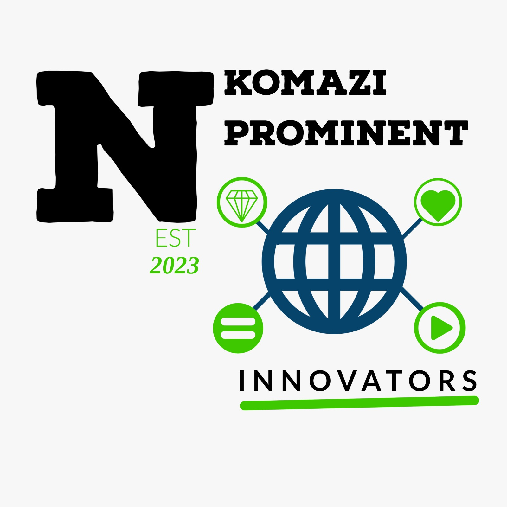

Home
Company Description
Prospective Services Rendered
Targeted (Potential) Institutions
Schools (First Phase)
Contact Info
Future of the Company
Inspiration
Nkomazi Prominent Innovators

Empowering youth through innovation
There is a real need for our community located in remote areas to be exposed to digital skills.